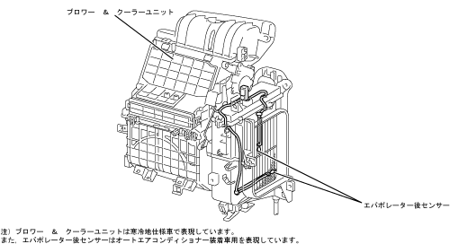

| Evaptrator after sensor |
| ● |
The cool air temperature immediately after passing the evaporator in the blower and cooler unit is detected as a resistance and outputs to each computer.
|
| ● |
In the case of manual air conditioner, output to the engine control computer in the manual air conditioner, and output the auto air conditioner to the auto air computer computer and the engine control computer, respectively.
|
| ● |
The mounting position is the rear part of the evaporator in the blower and cooler unit.
|
| ● |
After the evaporator, two sensors are used for the car equipped with auto -air conditioner and one sensor for cars equipped with manual air conditioner.
|
|  |